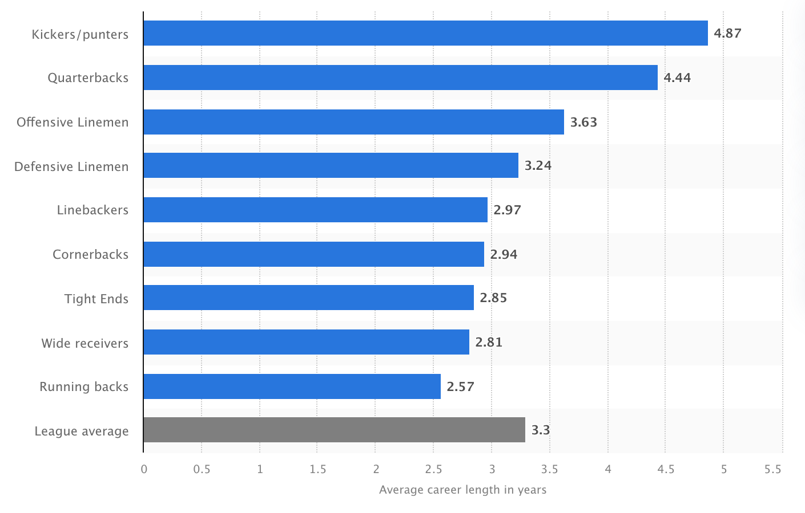

Aarav Batra's
About Me Page
About Me
Career
I attend East Brunswick High School in East Brunswick, New Jersey, in the Class of 2025.
My career path is to be a collegiate football player and to subsequently achieve great success at the professional level.
N(ame) I(mage) L(ikeness) is a big part of my future plans, where the market range for a Quarterback is about $500,000 to $600,000 (CBS Sports Stats.).
Subsequently, the market range for a long snapper is about $100,000 to $300,000.
This present an early opportunity to invest and save my earnings into securities and athlete development to be able to achieve great success at the professional level.
NIL has created a great opportunity for opportunities to market myself as a player, in which taking high level marketing classes has prepared me.
However, NCAA has currently terminated the Preferred Walk-On program where players can play for the team without a scholarship due to the Grant vs. House litigation (Sports Illustrated).
Instead, the current system revolves around a roster cap at 105 scholarship players, as opposed to 85 scholarship players and an unrestricted roster size.
Most teams carry around 135 players (CBS Sports), in which I would have to be better than the players being cut from the program to achieve a spot on the team, which is a enormous obstacle.
A great opportunity lies in the teams still being able to hold tryouts, in which the spring roster is unaffected by the new litigation (Rutgers Executive Assistant, Joe Susan).
At the professional level, for example the NFL, the base salary for every player starts at $500,000, and the biggest salary for a full season is $55M guaranteed for Joe Burrow (Fox Sports Stats.).
However, the average career path in the NFL is averaged at about 3.3 years (Statista Sports).
This presents an enormous obstacle to be able to have enough career longevity for a salary that continues into retirement.
Despite numerous pivotal changes in the landscape of college football, I am confident in my ability to overcome these obstacles and achieve great success at the collegiate level.

Serious Player,
Serious Results.
Class of 2025, QB/LS, 6' 3", 220 lbs., 5.2 sec. 40 yd. Dash, 185 lbs. Bench, 315 lbs. Squat, and 375 lbs. Deadlift.